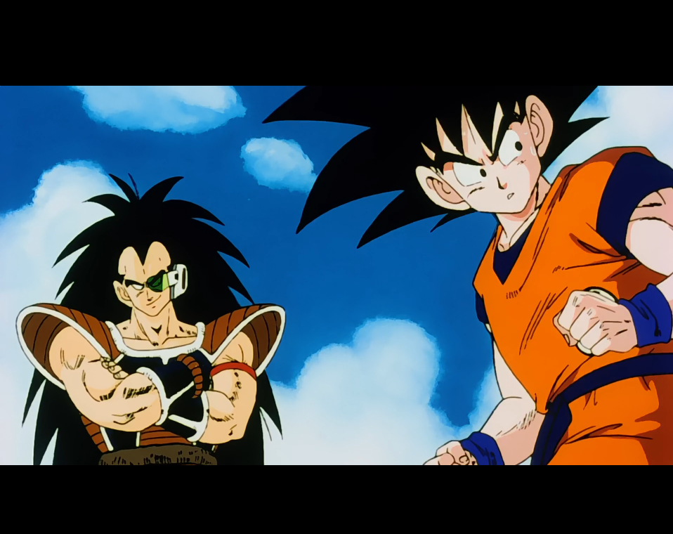

SAGA DES SAIYANS
Épisode 2 : Le passé de Sangoku - 恐るべきサイヤ人の到来
Alors que Son Goku présente son fils à Tortue Géniale (Kamé Sennin), Bulma et Krilin sur l’île de Kamé House, un mystérieux guerrier venu de l’espace, Raditz, retrouve enfin celui qu’il cherchait.
Il lui révèle qu’il est son frère, que tous deux appartiennent à la race des Saiyans, un peuple de guerriers originaire de la planète Végéta, et que Goku, de son vrai nom Kakarot, avait été envoyé sur Terre encore bébé avec pour mission de la détruire. Mais, recueilli par Son Gohan, son grand-père adoptif, Goku a perdu ses instincts destructeurs après une chute dans un ravin et est devenu inoffensif.
Raditz, qui est venu le chercher pour qu’il l’aide à conquérir une autre planète, met facilement Krilin hors d’état de nuire, puis neutralise Goku et enlève son fils Gohan afin de le contraindre à obéir.
